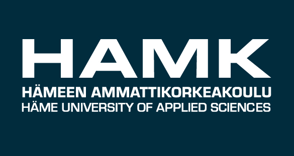

 Ahotointi
07.09.2021 10:31
Opinnot muodostuvat pääsääntöisesti moduuleista, jotka ovat toiminnallisia, työelämälähtöisiä kokonaisuuksia. Moduulien osaamisen arviointi perustuu moduulin osaamistavoitteisiin ja arviointikriteereihin. Moduulin osaamistavoitteiden taustalla on koko tutkinnon osaamistavoitteet eli tutkintoa vastaavassa työssä tarvittavat tiedot ja taidot.
Ennen syksyä 2021 aloittaneiden opetussuunnitelmien moduuleissa voi olla erikseen arvioitavia osia. Vaikka moduulissa olisikin osia, annetaan aina myös koko moduulille arvosana. Vuoden 2021 opetussuunnitelmissa moduulit ovat opintokokonaisuuksia, joille ei anneta arvosanaa, vaan moduuliin kuuluvat opintojaksot arvioidaan erikseen. Opiskelijan moduulissa saavuttama osaaminen arvioidaan pääsääntöisesti numeerisella arvioinnilla (arviointiasteikko 1-5), jossa 5 tarkoittaa kiitettävää osaamista, 4 ja 3 hyvää osaamista, 2 ja 1 tyydyttävää osaamista suhteessa moduulin osaamistavoitteisiin. HYL tarkoittaa hylättyä suoritusta. Opettaja kirjaa aina hylätystä suorituksesta hylkäämisen syyn opintorekisteriin. Näin opiskelija saa tiedon siitä, mitä kyseisen moduulin suorittamisesta puuttuu. Arvioinnin yhteydessä opiskelija saa kuitenkin arvioinnin niistä opintopisteistä, jotka hän on jo suorittanut hyväksytysti. Joissain tilanteissa moduuli arvioidaan asteikolla HYV hyväksytty – HYL hylätty, myös tällöin hylkäämisen syy kirjataan opintorekisteriin. Osaamisen arviointiin sisältyy jatkuva palaute oppimisestasi. Käytännössä arviointi on siis jatkuvaa yhteistyötä ja vuorovaikutusta muiden opiskelijoiden, opettajien sekä työpaikkaohjaajien tai projektien asiakkaiden kanssa. Saat palautetta sekä kirjallisesti että suullisesti oman osaamisesi kehittymisestä. Palautteen tarkoituksena on kannustaa sinua kehittymään. Sinulla on opiskelijana keskeinen rooli itse- ja vertaisarvioinnissa. Osaamistasi arvioidaan siis monipuolisilla tavoilla ja erilaisissa ympäristöissä. Tarkemmat kuvaukset arvioinnista löydät jokaisen moduulin toteutussuunnitelmasta ja tarvittaessa saat lisätietoa moduulin opettajilta.